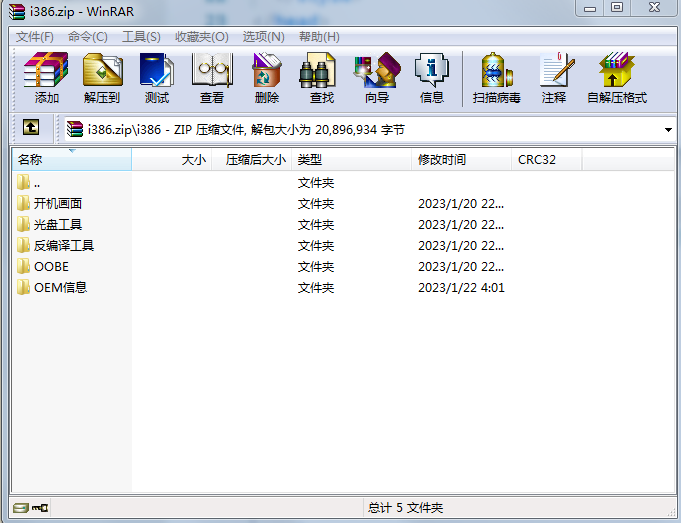

01
OVERVIEW
关于这个工具
来自 Bilibili Up 主“黄二哩个黄”的视频教程配套工具。
这是来自 Bilibili 著名 Up 主“黄二哩个黄”所发布的视频教程《[系统封装]拥有你自己的原版 XP 安装盘！如何修改 I386 封装的 Windows XP……》的配套工具。
它用于修改 I386 封装的 Windows XP 安装盘。项目以归档形式保留，下载与使用建议先完整观看对应教程。

02
BEFORE USE
使用提示
开始之前
- 先完整观看配套视频教程
- 备份原始 I386 目录与安装盘文件
- 确认系统版本与教程一致
下载信息
- 文件为 i386.zip
- 由外部服务器提供下载
- 教程作者：黄二哩个黄